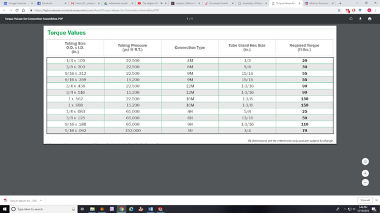
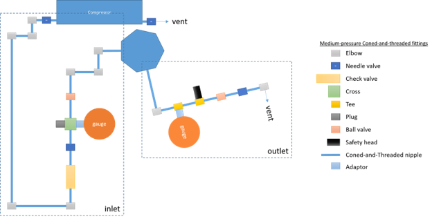

All fittings employed on the high-pressure side of the compressor are rated to the elevated operating pressures of 15kpsi. Instead of simple swage connections we employ coned-and-threaded connections which can be used to much higher pressures. Specifically, we are using the medium pressure version which generally are rated to at least 15kpsi (although in practice most are rated to 21kpsi). Again, all parts were oxygen cleaned by the manufacturer! This needs to be specified when requesting the quote. Mounting instructions for these parts can be found on the following page: https://high-pressure-products.maxprotech.com/viewitems/technical-information/on-assembly-of-standard-coned-threaded-connections the Swagelok website has similar coned-and-threaded parts with associated manual. However, Swagelok do not recommend mixing the parts. It is important not to exceed the torque values given in the following table:

| Description | Supplier | Part Number | Price | Lead Time |
|---|---|---|---|---|
| Nipple, ¼” size (which is the 4M size of Maxpro) | Maxpro | 21N4M-length in inches-316 | $10 - $100 | 1-2 weeks |
| Elbow | Maxpro | 21L4M | $36.00 | 1-2 weeks |
| Gland | Maxpro | 21G4M | $5.40 | 1-2 weeks |
| Collar | Maxpro | 21C4M | $3.60 | 1-2 weeks |
| Tee | Maxpro | 21T4M | $51.00 | 1-2 weeks |
| Cross | Maxpro | 21X4M | $62.00 | 1-2 weeks |
| Needle valve | Maxpro | 21V4M081 | $132.00 | 1-2 weeks |
| Ball valve | Maxpro | 21B244M | $391.00 | 1-2 weeks |
| Check valve | Maxpro | 21BC4M | $128.00 | 1-2 weeks |
| Safety head | Maxpro | 21SH4M | $113.00 | 1-2 weeks |
| Rupture disk, rated for 15 kpsi or 16960 kpsi | Maxpro | RD-15000 and RD-16960 | $60.00 | 1-2 weeks |
| 21,000 PSIG ¼ MP PLUGS | Maxpro | 21P4M | $7.20 | 1-2 weeks |
| Stainless Steel Pressure Gauge, 0 to 20000 psi, 4HF | Maxpro | 20PG44H | $361.00 | 1-2 weeks |
| Medium pressure Male -> High pressure Male adaptor, 1/4 in | Maxpro | 21M4M4H | $68.00 | 1-2 weeks |
| Medium pressure female -> female NPT adaptor, 1/4 in | Maxpro | 15F4M4P | $23.00 | 1-2 weeks |
| 21,000 PSIG ADAPTER, ¼ HP MALE X ¼ MP FEMALE | Maxpro | 21A4H4M | $44.10 | 1-2 weeks |
